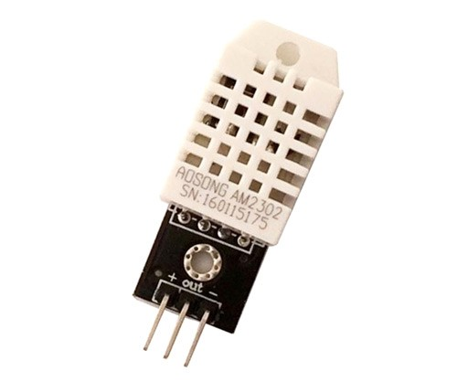
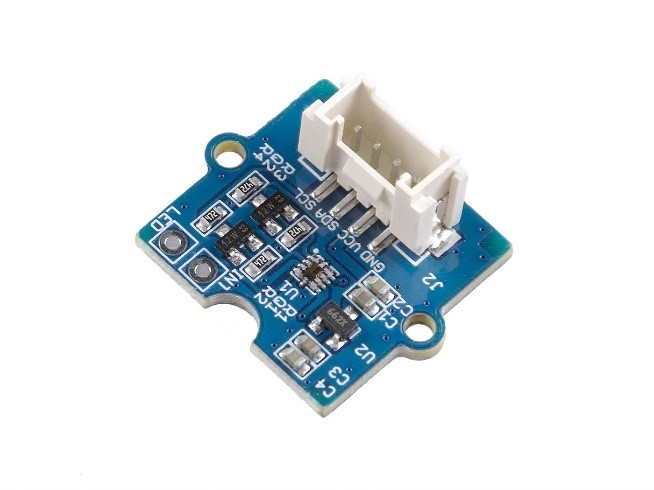
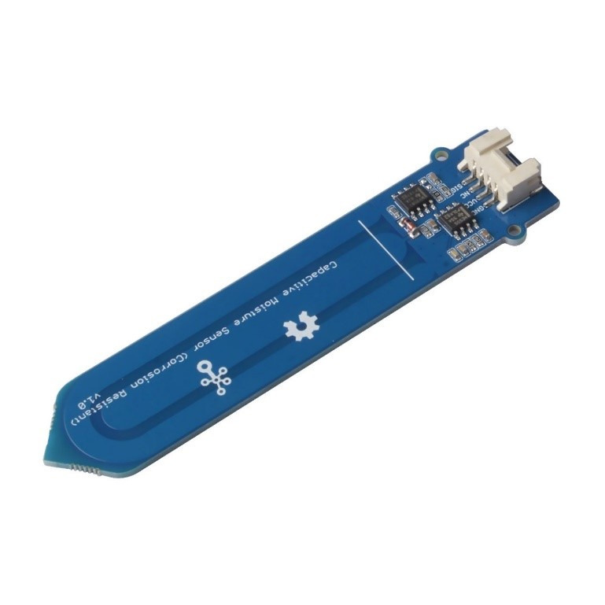
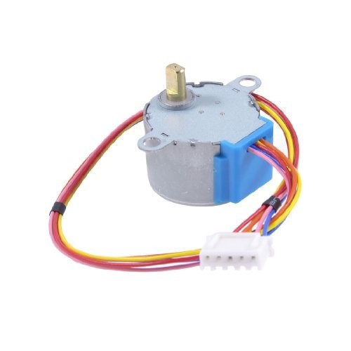
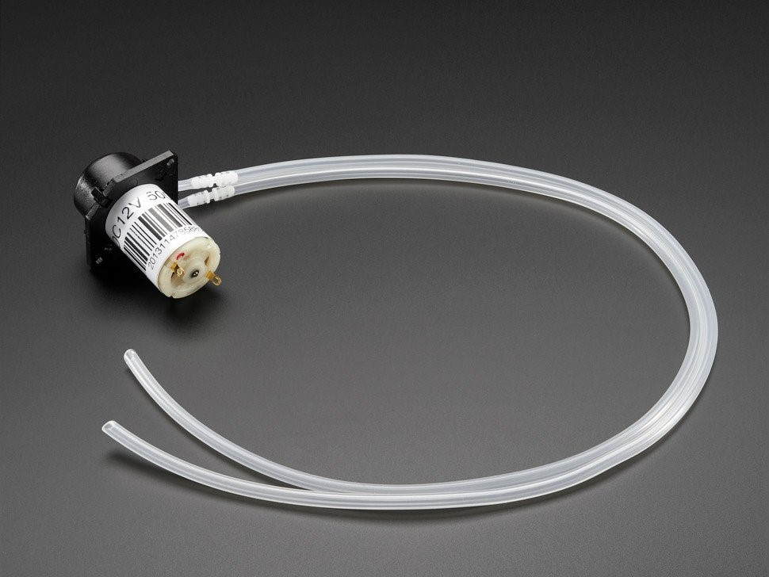

Sensor Development
By Yida Wang
There are three type sensors in YingXao:
- DHT22 (humidity and temperature)
- SI1145 (sunlight)
- Capacitive Moisture Sensor (moisture level)
We were initially planned to use the DHT11 as our humidity and temperature sensor, but because the DHT11 failed to read data more than 50% of the time,
we decided to switch to its successor, the DHT22. This sensor comes with a dedicated Negative Temperature Coefficient (NTC) thermistor to measure temperature
and an 8-bit microcontroller to output the digital value of temperature and humidity. The DHT22 is able to measure temperature from -40°C to 80°C and relative
humidity from 0% to 100% with an accuracy of ±1°C and ±1% [2].

Figure: DHT22 Temperature-Humidity Sensor
Plants need the energy from the sunlight to produce the necessary nutrients.
However, sometime they absorb too much energy than they can use, and that will damage the critical proteins [3].
We are using SI1145 sunlight sensor from the Grove to help us detect different spectrums of the sunlight.
The SI1145 is a low-power, reflectance-based, infrared proximity, UV index and ambient light sensor with I2C digital
interface and programmable-event interrupt output. This sensor offers excellent performance under a wide dynamic range
and a variety of light sources including direct sunlight [4].

Figure: Grove - Sunlight sensor (UV-light, visible light and infrared light) - SI1145
Another important data we need from the plant is the moisture level of the soil. We need this information to determine the
amount of water for the plant. We decided to use the capacitive moisture sensor from the Grove. It is a soil moisture sensor
based on the capacitance changes. Compared with resistive sensors, capacitive sensors do not require direct exposure of the
metal electrodes, which can significantly reduce the erosion of the electrodes. Hence, we call it Corrosion Resistant [5].

Figure: Grove - Capacitive Moisture Sensor (Corrosion-Resistant)
Actuators
By Yida Wang
We have two main actuators in YingXao:
- Stepper Motors
- Liquid Pump

Figure: 28BYJ-48 - 5V Stepper Motor
Stepper Motors plays an important role in YingXao because it controls the rotation of the solar shield.
We need to choose a stepper motor that is able to rotate both clockwise and counterclockwise precisely
during sunlight operation of the plant. 28-BYJ48 Stepper Motors is the most commonly used stepper motor.
It has a 4-coil unipolar arrangement and each coil is rated for +5V hence it is relatively easy to control
with any basic microcontrollers [6].

Figure: Peristaltic Liquid Pump with Silicone Tubing - 12V DC Power
Besides the stepper motors that controls the solar shield for the sunlight of the plant, we also need a
water pump that can irrigate the plants. After testing with multiple water pumps, we found that Peristaltic
Liquid Pump with Silicone Tubing from Adafruit works the best for YingXao. Since this is a peristaltic type
water pump, the pump actually squishes the silicone tubing that contains the liquid instead of impelling it
directly like other common water pumps [7]. This liquid pump needs to be powered with 12V DC power, and it
can pump the water with 100 milliliters per minutes. It is the most suitable water pump we have found for YingXao.